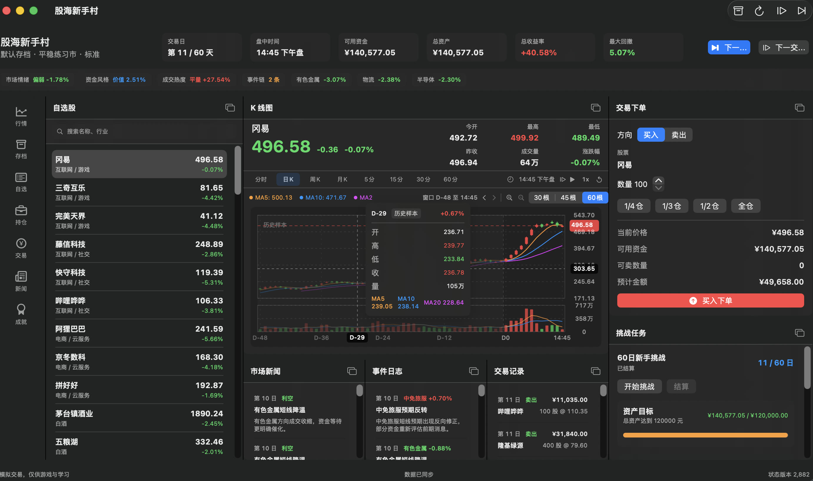

“股海新手村”是一款原生 macOS 模拟交易游戏，以确定性市场生成、A 股风格交易规则、事件驱动行情和挑战评分构成可重复推演的单机交易体验。

项目将界面、市场生成和交易结算分成清晰边界：SwiftUI 原生 App 负责多窗口终端体验，Fastify 服务端负责行情、持仓、费用、事件、挑战和存档等权威状态，SQLite 保存每局游戏的完整进度。
玩家可以在沙盒模式自由推进市场，也可以进入固定交易日挑战，在资产目标、最大回撤和交易次数之间做风险权衡。所有股票、价格、新闻和事件均为虚构内容。
每个存档保存独立的市场种子、市场环境与难度快照。行情生成同时考虑大盘情绪、资金风格、成交热度、行业轮动、个股波动、事件影响和事件链延续，并在不同板块上应用 10% 或 20% 的涨跌停边界。
K 线图由 SwiftUI Canvas 绘制，支持 1、5、15、30、60 分钟以及日、周、月周期。界面同步呈现蜡烛、MA5 / MA10 / MA20、成交量、成交量均线、价格轴、时间轴、最新价线和十字光标读数。
1 分钟线只暴露模拟时钟已经走过的数据，其他分钟周期由可见分钟线聚合，周 K 和月 K 则由日 K 聚合。玩家可以切换 30、45、60 根范围，并进行平移、缩放和自动播放。
交易引擎执行 100 股整数手、T+1、现金与可卖持仓校验、佣金、印花税以及涨跌停方向限制。买卖在 SQLite 事务中更新账户、持仓和交易记录，随后重算市值、总资产、收益率与最大回撤。
每个交易请求带有幂等键，重复提交只返回已有成交；写操作同时校验 expectedStateVersion，过期窗口不能覆盖较新的游戏状态。主窗口与持仓、下单、图表等独立窗口因此可以共享同一权威状态。
系统提供 20 日热身、60 日新手和 120 日稳健成长挑战，综合资产目标、最大回撤和最低交易次数进行结算，输出分数与 S、A、B、C 评级。挑战目标会随存档难度调整，沙盒模式则不受强制结束条件约束。
多存档支持创建、载入、重命名和删除。相同内容包在不同市场种子、市场环境和难度下会生成不同的行情路径，同时保持同一存档可重复推进和验证。
原生 App 的 ObservableObject Store 连接 Fastify API，服务端领域层统一处理市场、订单、组合、事件、挑战和存档，再写入本地 SQLite。旧 React 前端保留为调试入口，不承担默认交付。
行业、股票、市场环境、难度和事件模板存放在 CSV 内容包中。后端启动时验证表头、唯一 ID、行业引用、枚举值和数量下限，使扩充内容不需要修改核心交易代码。